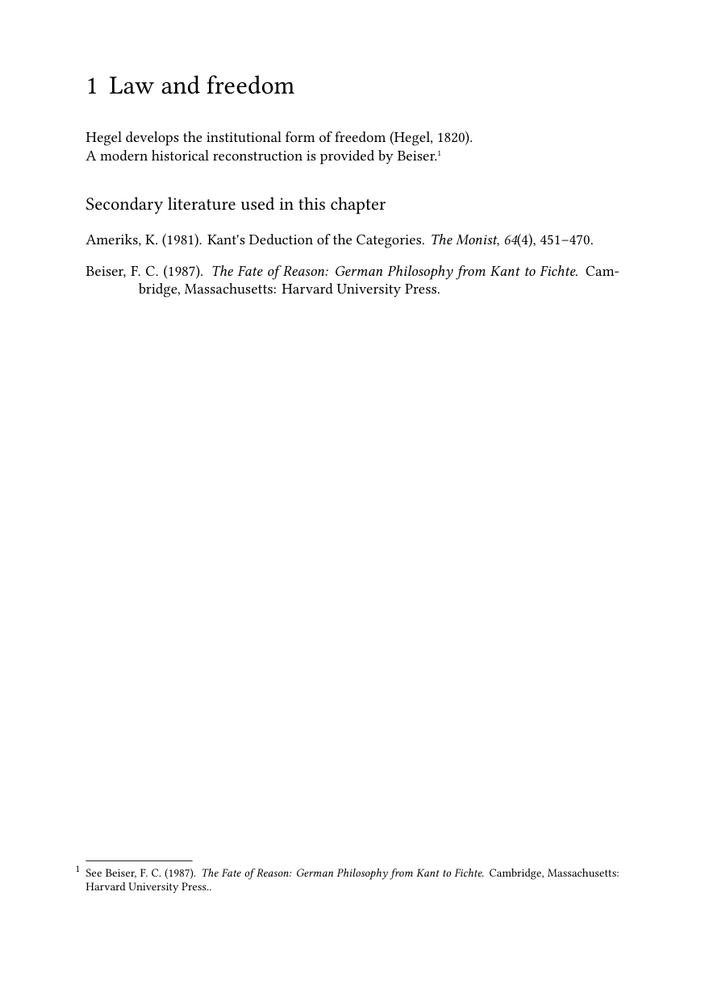

🚧 Warning: this page is under construction. Please do not edit it while this banner is displayed.
Bibliography guides — Guide 4 of 4
← Previous: Guide 3 — Creating local and multiple bibliographies · Current: Guide 4 — Organising bibliographies in complex editorial projects · End of the bibliography guides
Contents
- 1 1. Organising bibliographies in complex editorial projects
-
2
2. The main difficulties of a large project
- 2.1 2.1. Data and formatting become entangled
- 2.2 2.2. Repetition produces divergence
- 2.3 2.3. Several bibliographies create ambiguous ownership
- 2.4 2.4. Local and global lists may compete
- 2.5 2.5. Manual references break the structured workflow
- 2.6 2.6. Data relationships become repetitive
- 2.7 2.7. Interaction and cross-links are often considered too late
- 3 3. A recommended project architecture
- 4 4. Centralising bibliography settings
- 5 5. Loading data: one file or several files?
- 6 6. Reusable citation commands
- 7 7. Developed references in scholarly notes
- 8 8. Local and final bibliographies in a multifile project
- 9 9. MWE: a compact project architecture
- 10 10. Cross-references: two different meanings
- 11 11. MWE: a child record and a parent record
- 12 12. JabRef and the maintenance of structured data
- 13 13. Naming conventions for a long project
- 14 14. Project, product, component, and environment
- 15 15. A bibliography component in backmatter
-
16
16. Common problems in complex projects
- 16.1 16.1. The same setup appears in several chapter files
- 16.2 16.2. A citation resolves in one component but not another
- 16.3 16.3. A record appears in the wrong bibliography
- 16.4 16.4. A developed note reference does not appear in the final list
- 16.5 16.5. A local bibliography contains references from another chapter
- 16.6 16.6. A child record lacks publication data
- 16.7 16.7. A parent record appears unexpectedly
- 16.8 16.8. Several files contain the same key
- 16.9 16.9. A multiple citation repeats the dataset prefix
- 16.10 16.10. A style change requires editing every chapter
- 17 17. A practical diagnostic table
- 18 18. Processing passes and clean rebuilds
- 19 19. A checklist before publication
- 20 20. What this guide has established
- 21 21. End of the bibliography guides
- 22 22. Related pages and commands
1. Organising bibliographies in complex editorial projects
The first three guides introduced the main elements of ConTeXt bibliography workflows.
Guide 1 established the basic sequence:
- create or obtain bibliographic data;
-
load a
.bibfile or buffer; - cite a record;
- place a bibliography.
Guide 2 separated the conceptual layers:
- bibliographic source;
- dataset;
- specification;
- citation alternative;
- rendering;
- selection;
- sorting;
- placement.
Guide 3 then showed how to create:
- local bibliographies;
- final bibliographies;
- several renderings from one dataset;
- several independent datasets;
- separate primary and secondary bibliographies.
Those mechanisms are sufficient for small and medium-sized documents. Difficulties appear when the project becomes larger.
A long monograph, collected volume, scholarly edition, or translation may contain:
- dozens of chapters or components;
- several hundred or several thousand bibliographic records;
- primary texts, translations, archival documents, and secondary literature;
- references inserted in running text and in footnotes;
- local bibliographies and final bibliographies;
- several citation conventions;
- shared settings used by many files and components;
- records that depend on other records;
- editorial commands that must remain stable while the project evolves.
At that scale, a bibliography can still compile while remaining badly organised.
Typical warning signs include:
- the same setup is copied into every chapter;
- dataset names change from one component to another;
- citations use unqualified keys in a project with several datasets;
- bibliographic entries are typed manually in notes;
-
several
.bibfiles contain duplicate or inconsistent records; - one rendering is used for several incompatible editorial purposes;
- local lists and final lists behave differently after each revision;
- changing a style requires editing many files;
- a chapter record repeats information already stored in the parent book;
- links between citations and bibliography entries are absent or unclear;
- auxiliary files preserve stale information after structural changes.
This guide addresses those difficulties by treating bibliography as a project architecture rather than as a collection of isolated commands.
The main principle
A complex bibliography remains manageable when four responsibilities are kept separate:
- bibliographic data;
- editorial classification;
- citation and rendering rules;
- document placement.
Each responsibility should have a clearly identified location in the project.
2. The main difficulties of a large project
2.1. Data and formatting become entangled
A small document may place all commands in one file.
In a long project, that approach makes it difficult to distinguish:
- the data themselves;
- the choice of datasets;
- the bibliography style;
- the list definitions;
- the chapter structure;
- the actual prose.
A change to one layer can then affect several unrelated files.
2.2. Repetition produces divergence
Copying the same setup into ten chapter files initially appears convenient.
Later, one copy is corrected while another remains unchanged.
The project then contains several incompatible versions of what was intended to be one rule.
2.3. Several bibliographies create ambiguous ownership
When the document contains primary sources, secondary studies, translations, and archival records, every citation must belong to the correct collection.
An unqualified key such as:
\cite[authoryear][beiser1987]
may become ambiguous.
An explicit key such as:
\cite[authoryear][secondary::beiser1987]
makes the editorial intention visible.
2.4. Local and global lists may compete
A record can appear in:
- a chapter bibliography;
- a bibliography for one part;
- a final bibliography;
- a specialised list.
That is not necessarily an error. It may be the intended result of several renderings.
The real problem is failing to decide which lists should contain the record.
2.5. Manual references break the structured workflow
A manually typed note may look correct:
\footnote{ See Frederick C. Beiser, \emph{The Fate of Reason}, Cambridge, 1987. }
But ConTeXt cannot automatically treat that prose as the record
secondary::beiser1987.
The note is visually correct but structurally disconnected.
2.6. Data relationships become repetitive
A chapter in an edited volume may repeat:
- the volume title;
- the editor;
- the publisher;
- the place;
- the year.
When several chapters belong to the same volume, this repetition increases the risk of inconsistency.
The BibTeX field crossref can express a relation between the
chapter record and the parent volume record.
2.7. Interaction and cross-links are often considered too late
A citation is not only text. It identifies a structured record.
When PDF interaction is enabled, citations and bibliography entries can also participate in document navigation.
If interaction is added only at the end, inconsistent naming and rendering choices may be harder to repair.
3. A recommended project architecture
A large editorial project benefits from a directory structure whose names describe the function of the files.
The following organisation separates environments, bibliographic data, images, front matter, body matter, and back matter:
project/
├── product.tex
├── env/
│ ├── general.mkxl
│ ├── bibliography.mkxl
│ └── notes.mkxl
├── bib/
│ ├── primary.bib
│ ├── secondary.bib
│ ├── translations.bib
│ └── archives.bib
├── images/
│ ├── figures/
│ ├── portraits/
│ └── facsimiles/
├── frontmatter/
│ ├── titlepage.tex
│ ├── introduction.tex
│ └── acknowledgements.tex
├── bodymatter/
│ ├── chapter-01.tex
│ ├── chapter-02.tex
│ └── chapter-03.tex
└── backmatter/
├── bibliography.tex
├── indexes.tex
└── colophon.tex
The extensions also indicate the role of the files:
-
.mkxlfor shared ConTeXt LMTX environments; -
.texfor the product and textual components; -
.bibfor bibliographic data.
This organisation separates responsibilities clearly.
| Location | File type | Responsibility |
|---|---|---|
product.tex
|
Product | Overall assembly of the publication |
env/general.mkxl
|
Environment | Page, font, heading, language, and general layout settings |
env/bibliography.mkxl
|
Environment | Dataset loading, specifications, renderings, sorting, and bibliography commands |
env/notes.mkxl
|
Environment | Reusable note and citation commands |
bib/*.bib
|
Bibliographic data | Structured bibliographic records |
images/
|
Graphic resources | Figures, portraits, diagrams, and facsimiles |
frontmatter/*.tex
|
Components | Title pages, introduction, acknowledgements, and other preliminary material |
bodymatter/*.tex
|
Components | Chapters and the main scholarly content |
backmatter/*.tex
|
Components | Bibliographies, indexes, appendices, and colophon |
A directory structure is not merely cosmetic.
It makes it easier to identify where a problem belongs:
-
incorrect metadata →
bib/; -
wrong punctuation or sorting →
env/bibliography.mkxl; -
inconsistent note form →
env/notes.mkxl; -
missing figure →
images/; -
misplaced chapter bibliography →
bodymatter/; -
incorrect final-list placement →
backmatter/bibliography.tex.
3.1. Why use functional directory names?
Names such as env, bib, frontmatter,
bodymatter, and backmatter describe the editorial
role of the files.
They are more informative than generic names such as:
files/ sources/ misc/ texts/ final/
A collaborator can understand the project without first opening every file.
3.2. Why use .mkxl for environments?
In a ConTeXt LMTX project, shared environment files may use the
.mkxl extension.
This visually separates configuration files from textual components:
env/general.mkxl bodymatter/chapter-01.tex
The distinction is useful even though ConTeXt can process several recognised extensions.
3.3. Why keep components as .tex files?
The product and components contain the actual publication structure and scholarly text.
Using .tex for these files makes their role immediately visible:
product.tex frontmatter/introduction.tex bodymatter/chapter-01.tex backmatter/bibliography.tex
4. Centralising bibliography settings
4.1. The bibliography environment
The file env/bibliography.mkxl may contain:
\usebtxdataset [primary] [bib/primary.bib] \usebtxdataset [secondary] [bib/secondary.bib] \usebtxdataset [translations] [bib/translations.bib] \usebtxdefinitions [apa]
It may also define all renderings:
\definebtxrendering [primary-global] [apa] [dataset=primary, sorttype=authoryear] \definebtxrendering [secondary-global] [apa] [dataset=secondary, sorttype=authoryear] \definebtxrendering [secondary-local] [apa] [dataset=secondary, sorttype=authoryear]
The files in bodymatter/ then contain citations, but not the
complete bibliography configuration.
4.2. Why centralisation matters
A central environment allows the editor to change:
- the active specification;
- the sorting order;
- the names of renderings;
- numbering;
- hanging indentation;
- spacing between entries;
- interaction settings;
- dataset paths;
without editing every chapter.
4.3. Use stable names
Names should describe editorial roles rather than temporary experiments.
Prefer:
primary-global secondary-global secondary-local translations-global
to:
list1 testlist newlist final2
Stable names make the project readable months or years later.
5. Loading data: one file or several files?
5.1. One dataset may receive several files
Several files can contribute to one logical collection:
\usebtxdataset [secondary] [bib/books.bib] \usebtxdataset [secondary] [bib/articles.bib]
This is useful when files are divided for maintenance but the records belong to one secondary bibliography.
5.2. Several datasets express editorial distinctions
Separate datasets are appropriate when the distinction must remain visible:
\usebtxdataset [primary] [bib/primary.bib] \usebtxdataset [secondary] [bib/secondary.bib]
The distinction then appears explicitly in citations:
primary::hegel1820 secondary::beiser1987
5.3. Avoid accidental duplication
The same work should not normally be copied into several datasets merely because it appears in several lists.
Instead, decide whether:
- the work belongs to one stable collection;
- several renderings should select it;
- the editorial project genuinely classifies it in more than one way.
Duplicate records create long-term maintenance problems.
If two records describe the same publication, later corrections may be applied to only one copy. The bibliography then contains conflicting data.
6. Reusable citation commands
6.1. Why define editorial commands?
A large project should not require the author to remember every low-level bibliography option.
Instead of repeatedly writing:
\cite [alternative=entry] [secondary::beiser1987]
the project may define a reusable command.
For example:
\define[1]\SecondaryEntry {\cite [alternative=entry] [secondary::#1]}
The chapter can then use:
\SecondaryEntry{beiser1987}
6.2. A command for a short secondary citation
\define[1]\SecondaryCite {\cite [authoryear] [secondary::#1]}
Usage:
\SecondaryCite{beiser1987}
6.3. A command for primary sources
\define[1]\PrimaryCite {\cite [authoryear] [primary::#1]}
Usage:
\PrimaryCite{hegel1820}
6.4. Advantages and limits
Reusable commands:
- reduce typing;
- prevent dataset-name errors;
- make editorial intent visible;
- allow later global changes;
- separate project policy from chapter prose.
However, commands should remain transparent enough that another editor can understand what they do.
7. Developed references in scholarly notes
7.1. Connecting the note to the dataset
A scholarly note often requires a complete reference.
The structured form is:
\footnote{ See \cite [alternative=entry] [secondary::beiser1987]. }
This command:
- displays the developed entry in the note;
-
records the use of
secondary::beiser1987; - allows a later rendering to select the same record.
7.2. Defining a reusable note command
A project may define:
\define[2]\SecondaryNote {\footnote{ #1 \cite [alternative=entry] [secondary::#2]. }}
Usage:
\SecondaryNote {For the wider historical reconstruction, see} {beiser1987}
7.3. Keep prose and data separate
The note command may contain the editorial prose.
The bibliographic record remains in the dataset.
This prevents the note from duplicating:
- author names;
- titles;
- publication places;
- publishers;
- years.
8. Local and final bibliographies in a multifile project
8.1. Local bibliography at the end of a chapter
At the end of a chapter component:
\subject{References for this chapter} \placebtxrendering [secondary-local] [method=local]
8.2. Final bibliography at the end of the work
In backmatter/bibliography.tex:
\chapter{Bibliography} \subject{Primary sources} \placebtxrendering [primary-global] [method=global, repeat=yes] \subject{Secondary bibliography} \placebtxrendering [secondary-global] [method=global, repeat=yes]
8.3. Why repeat=yes may be needed
A record already rendered in a chapter bibliography may need to appear again in the final bibliography.
The setting:
repeat=yes
permits that repeated rendering.
The data themselves remain unique.
9. MWE: a compact project architecture
The following example compresses a project architecture into one self-contained file.
-
\mainlanguage[en] \setuppapersize[A5] \setuplayout [backspace=18mm, topspace=15mm, width=middle, height=middle, header=0pt, footer=8mm] \setupbodyfont [libertinus,9pt] \startbuffer[primary] @Book{hegel1820, author = {Hegel, Georg Wilhelm Friedrich}, title = {Grundlinien der Philosophie des Rechts}, publisher = {Nicolai}, address = {Berlin}, year = {1820}, } \stopbuffer \startbuffer[secondary] @Book{beiser1987, author = {Beiser, Frederick C.}, title = {The Fate of Reason}, subtitle = {German Philosophy from Kant to Fichte}, publisher = {Harvard University Press}, address = {Cambridge, Massachusetts}, year = {1987}, } @Article{ameriks1981, author = {Ameriks, Karl}, title = {Kant's Deduction of the Categories}, journal = {The Monist}, year = {1981}, volume = {64}, number = {4}, pages = {451--470}, } \stopbuffer \usebtxdataset [primary] [primary.buffer] \usebtxdataset [secondary] [secondary.buffer] \usebtxdefinitions [apa] \definebtxrendering [primary-global] [apa] [dataset=primary, sorttype=authoryear] \definebtxrendering [secondary-local] [apa] [dataset=secondary, sorttype=authoryear] \definebtxrendering [secondary-global] [apa] [dataset=secondary, sorttype=authoryear] \define[1]\PrimaryCite {\cite [authoryear] [primary::#1]} \define[1]\SecondaryCite {\cite [authoryear] [secondary::#1]} \define[1]\SecondaryEntry {\cite [alternative=entry] [secondary::#1]} \starttext \chapter{Law and freedom} Hegel develops the institutional form of freedom \PrimaryCite{hegel1820}. A modern historical reconstruction is provided by Beiser.\footnote{ See \SecondaryEntry{beiser1987}. } \subject{Secondary literature used in this chapter} \placebtxrendering [secondary-local] [method=local] \chapter{The categories} Ameriks analyses the structure of Kant's deduction \SecondaryCite{ameriks1981}. \subject{Secondary literature used in this chapter} \placebtxrendering [secondary-local] [method=local, repeat=yes] \chapter{Final bibliographies} \subject{Primary sources} \placebtxrendering [primary-global] [method=global, repeat=yes] \subject{Secondary bibliography} \placebtxrendering [secondary-global] [method=global, repeat=yes] \stoptext
-

How this example is organised
| Element | Responsibility |
|---|---|
primary
|
Dataset for primary texts |
secondary
|
Dataset for secondary scholarship |
primary-global
|
Final list of used primary sources |
secondary-local
|
Chapter-level secondary bibliography |
secondary-global
|
Final secondary bibliography |
\PrimaryCite
|
Short citation from the primary dataset |
\SecondaryCite
|
Short citation from the secondary dataset |
\SecondaryEntry
|
Developed entry that also registers the record as used |
10. Cross-references: two different meanings
The expression cross-reference can refer to two different mechanisms.
They should not be confused.
10.1. Cross-references between document locations and bibliography entries
A citation such as:
\cite [authoryear] [secondary::beiser1987]
connects a location in the document to a structured bibliographic record.
The same record may later appear in a bibliography rendering.
When interaction is enabled:
\setupinteraction [state=start]
the PDF can expose navigable relations between document elements, including citations and bibliography entries, depending on the active bibliography and interaction setup.
The important point is conceptual:
- the citation is not independent prose;
- it identifies a record;
- the rendering displays that record elsewhere;
- both appearances belong to one structured system.
10.2. The BibTeX crossref field
The field:
crossref = {parent-key}
expresses a relation between two bibliographic records.
A common example is a chapter contained in an edited volume.
The parent record stores the shared publication information:
@Book{idealism-volume-2020, editor = {Martin, Anna}, title = {Studies in German Idealism}, publisher = {Example Press}, address = {Oxford}, year = {2020}, }
The child record stores the information specific to the chapter:
@InCollection{durand-hegel-2020, author = {Durand, Paul}, title = {Hegel and Recognition}, pages = {45--68}, crossref = {idealism-volume-2020}, }
The relation allows shared metadata to be associated with the parent record instead of being repeated in every child record.
10.3. Why crossref is useful
The field can reduce duplication when several records belong to one parent publication.
Typical relations include:
- chapter → edited volume;
- conference paper → proceedings;
- contribution → collective work;
- article → special issue;
- item → larger bibliographic container.
10.4. Why crossref requires discipline
The parent key must remain stable.
If:
idealism-volume-2020
is renamed, every child record that refers to it must be updated.
The parent record must also contain accurate shared metadata.
Two meanings of cross-reference
| Mechanism | Relation expressed |
|---|---|
| Citation and bibliography link | A document location refers to a bibliographic record |
BibTeX crossref
|
One bibliographic record refers to another bibliographic record |
11. MWE: a child record and a parent record
The following example demonstrates the data relationship.
-
\mainlanguage[en] \setuppapersize[A5] \setuplayout [backspace=18mm, topspace=15mm, width=middle, height=middle, header=0pt, footer=8mm] \setupbodyfont [libertinus,9pt] \startbuffer[biblio] @Book{idealism-volume-2020, editor = {Martin, Anna}, title = {Studies in German Idealism}, publisher = {Example Press}, address = {Oxford}, year = {2020}, } @InCollection{durand-hegel-2020, author = {Durand, Paul}, title = {Hegel and Recognition}, pages = {45--68}, crossref = {idealism-volume-2020}, } \stopbuffer \usebtxdataset [secondary] [biblio.buffer] \usebtxdefinitions [apa] \definebtxrendering [secondarylist] [apa] [dataset=secondary, sorttype=authoryear] \starttext Durand discusses recognition in Hegel \cite[authoryear][secondary::durand-hegel-2020]. \subject{Secondary bibliography} \placebtxrendering [secondarylist] [method=global] \stoptext
Verify the rendered result in the current ConTeXt version.
The exact treatment of inherited fields and the final form of a
crossref-based entry depend on the active bibliography
specification and implementation.
For production work, compare the rendered entry with the publisher's requirements and inspect the current publications documentation.
12. JabRef and the maintenance of structured data
A bibliography manager such as JabRef can help maintain a large
.bib collection.
Useful tasks include:
- finding duplicate records;
- normalising entry types;
- checking required fields;
- managing citation keys;
-
editing
crossrefrelations; - locating child and parent records;
- importing metadata;
- searching by author, title, year, or keyword.
The bibliography manager does not typeset the document.
ConTeXt remains responsible for:
- citation alternatives;
- renderings;
- selection;
- sorting;
- placement;
- document interaction.
A useful division of labour
JabRef or another editor maintains the bibliographic data.
ConTeXt interprets, selects, formats, and places those data in the document.
13. Naming conventions for a long project
13.1. Dataset names
Use short, stable, meaningful names:
primary secondary translations archives
13.2. Rendering names
Include both collection and scope:
primary-global secondary-local secondary-global translations-global
13.3. Citation keys
Keys should be:
- unique;
- stable;
- distinguishable;
- free of spaces;
- consistent with the project's conventions.
Examples:
hegel1820-rechtsphilosophie beiser1987-fate-reason ameriks1981-kant-categories durand-hegel-2020
13.4. Parent keys used by crossref
A parent key should describe the container publication clearly:
idealism-volume-2020 conference-proceedings-2024 special-issue-kant-2023
Do not rename established parent keys casually.
14. Project, product, component, and environment
A large ConTeXt publication may use:
- a project file;
- one or more products;
- components;
- environments.
In the architecture proposed here:
-
shared settings belong in
env/; -
preliminary components belong in
frontmatter/; -
chapters belong in
bodymatter/; -
final lists and indexes belong in
backmatter/.
The product assembles the complete publication.
For example:
% product.tex \environment env/general.mkxl \environment env/bibliography.mkxl \environment env/notes.mkxl \startproduct book \component frontmatter/titlepage \component frontmatter/introduction \component frontmatter/acknowledgements \component bodymatter/chapter-01 \component bodymatter/chapter-02 \component bodymatter/chapter-03 \component backmatter/bibliography \component backmatter/indexes \component backmatter/colophon \stopproduct
The product file should express the structure of the publication, not repeat the detailed bibliography setup.
A body-matter component can therefore remain focused on content:
\startcomponent chapter-01 \chapter{The pantheism controversy} Jacobi's intervention changed the terms of the debate \PrimaryCite{jacobi1785}. \stopcomponent
The distinction is:
| Element | Main role |
|---|---|
| Environment | Defines reusable settings and commands |
| Product | Assembles the complete publication |
| Component | Contains a chapter or another editorial unit |
15. A bibliography component in backmatter
The final lists may be placed in
backmatter/bibliography.tex:
\startcomponent bibliography \chapter{Bibliography} \subject{Primary sources} \placebtxrendering [primary-global] [method=global, repeat=yes] \subject{Secondary bibliography} \placebtxrendering [secondary-global] [method=global, repeat=yes] \stopcomponent
This keeps list placement separate from list definition.
The environment env/bibliography.mkxl defines the datasets,
specification, and renderings.
The component backmatter/bibliography.tex decides where the final
lists appear.
The product product.tex decides when that component is included.
16. Common problems in complex projects
16.1. The same setup appears in several chapter files
Move shared definitions to an environment.
16.2. A citation resolves in one component but not another
Check:
- whether the bibliography environment is loaded;
- whether the dataset is loaded before the component is processed;
-
whether the path to the
.bibfile is correct; - whether the key is explicitly qualified.
16.3. A record appears in the wrong bibliography
Check the dataset associated with the rendering.
The visible heading does not control the dataset.
16.4. A developed note reference does not appear in the final list
Check:
-
whether the note uses a structured
\cite; - whether the record belongs to the expected dataset;
- whether the final rendering uses that dataset;
-
whether
method=globalis used; -
whether
repeat=yesis needed.
16.5. A local bibliography contains references from another chapter
Check:
- structural scope;
- component boundaries;
- placement of the local rendering;
- stale auxiliary data.
16.6. A child record lacks publication data
Check:
-
the
crossrefkey; - the parent record;
- the active specification;
- whether the required inherited fields are supported as expected.
16.7. A parent record appears unexpectedly
The parent record may itself have been selected or may be involved in the bibliographic relationship.
Inspect the dataset and rendering behaviour rather than deleting the parent record immediately.
16.8. Several files contain the same key
Duplicate keys in one dataset can produce conflicts or unexpected overwriting.
Use a bibliography manager or a text search to locate duplicates.
16.9. A multiple citation repeats the dataset prefix
For records from one dataset, write:
\cite [authoryear] [secondary::beiser1987,ameriks1981]
not:
\cite [authoryear] [secondary::beiser1987,secondary::ameriks1981]
16.10. A style change requires editing every chapter
The style was not sufficiently centralised.
Move the specification and rendering definitions to the bibliography environment.
17. A practical diagnostic table
| Symptom | Layer to inspect |
|---|---|
| A key is unresolved | Data file, dataset loading, path, key spelling, qualification |
| The correct record appears in the wrong list | Rendering-to-dataset association |
| A note looks correct but does not populate a bibliography | Manual prose instead of structured citation |
| Chapter and final bibliographies disagree | Local/global selection, repeat=yes, processing passes
|
| A chapter entry lacks volume information | crossref, parent record, specification
|
| A style correction must be repeated in many files | Missing central environment |
| Two records disagree about the same publication | Duplicate data |
| A citation works but is not clickable | Interaction and bibliography-link setup |
| Old entries remain after major changes | Auxiliary files and clean rebuild |
18. Processing passes and clean rebuilds
A complex project may require several ConTeXt passes.
This is especially true after changes to:
- project structure;
- component order;
- dataset names;
- rendering names;
- citation keys;
- local and global bibliographies;
- cross-references;
- interaction;
- indexes and other collected lists.
Purge the auxiliary files with:
context --purgeall product.tex
The existing PDF is not removed by this command.
Delete it manually when a completely clean rebuild is required.
19. A checklist before publication
Before producing the final PDF, verify:
-
environment files are centralised in
env/; -
bibliographic data are stored in
bib/; - textual components are divided coherently between
frontmatter/,bodymatter/, andbackmatter/;
-
graphic resources are stored in
images/; - every dataset has a stable editorial purpose;
- every rendering is associated with the correct dataset;
- citation keys are unique;
- citations are explicitly qualified where several datasets exist;
- multiple citations use the dataset prefix only once;
- developed note references use structured citation commands;
- local bibliographies contain only the intended chapter records;
- final bibliographies contain all intended records;
-
repeat=yesis used where necessary; -
parent and child records linked by
crossrefare consistent; - bibliographic styles match the publisher's requirements;
- interaction behaves as expected;
- the project compiles cleanly after auxiliary files are purged.
20. What this guide has established
This guide has brought the complete bibliography workflow together.
You have seen that:
- complex bibliography work is primarily an architectural problem;
- bibliographic data should be separated from formatting and placement;
- shared bibliography settings belong in an environment;
- datasets express stable editorial collections;
- renderings express different views and scopes;
- reusable citation commands reduce errors and centralise editorial policy;
-
\cite[alternative=entry]connects developed note references to
later bibliography selection;
- local and global bibliographies can coexist;
-
repeat=yesallows one record to appear in several intended
renderings;
-
citation-to-bibliography links and BibTeX
crossrefare two
different forms of cross-reference;
-
the
crossreffield can relate child records to parent records; -
functional directories such as
env/,bib/,
frontmatter/,bodymatter/, andbackmatter/clarify the architecture;
- naming conventions, file extensions, and clean processing passes are
essential to long-term maintainability.
The complete workflow can be summarised as follows:
bib/*.bib
|
v
named datasets in env/bibliography.mkxl
|
+--------------------> citations and notes in bodymatter/*.tex
|
v
central specifications and renderings
|
+--------------------> local lists in bodymatter/
|
+--------------------> global lists in backmatter/
|
v
complete assembly in product.tex
21. End of the bibliography guides
The four guides form a progression:
- Creating a bibliography and citing sources
- Understanding bibliography datasets, styles, renderings, selection, and sorting
- Creating local and multiple bibliographies
- Organising bibliographies in complex editorial projects
Together they move from a first citation to the architecture of a long scholarly publication.
22. Related pages and commands
- References notes and floats/Bibliography and citations
- Creating a bibliography and citing sources
- Understanding bibliography datasets, styles, renderings, selection, and sorting
- Creating local and multiple bibliographies
- Bibliography-related commands
- \usebtxdataset
- \usebtxdefinitions
- \cite
- \footnote
- \definebtxrendering
- \setupbtxrendering
- \placebtxrendering
- \setupinteraction
- \environment
- \component
- \product
Bibliography guides — Guide 4 of 4
← Previous: Guide 3 — Creating local and multiple bibliographies · Current: Guide 4 — Organising bibliographies in complex editorial projects · End of the bibliography guides